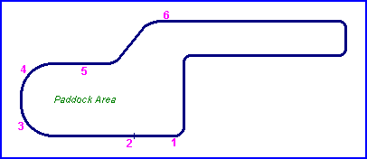
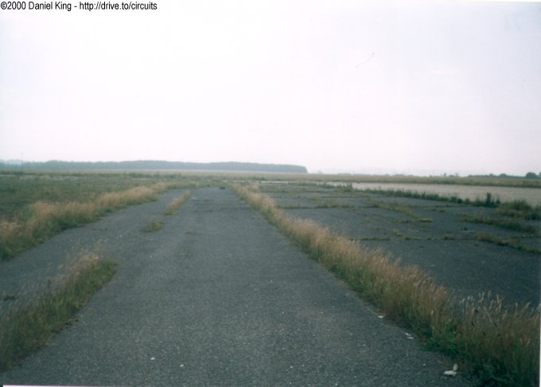
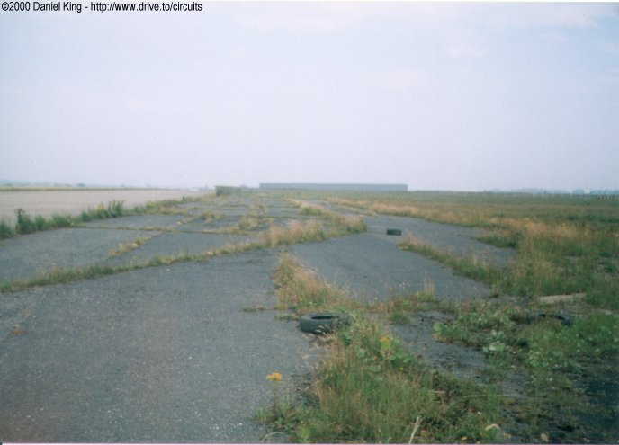
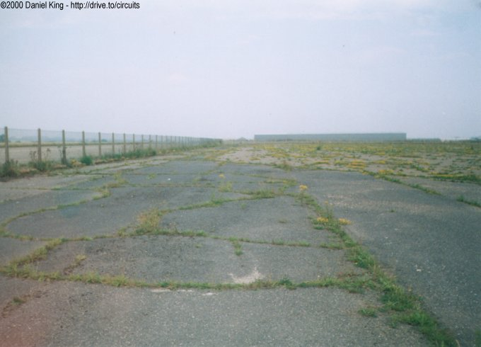
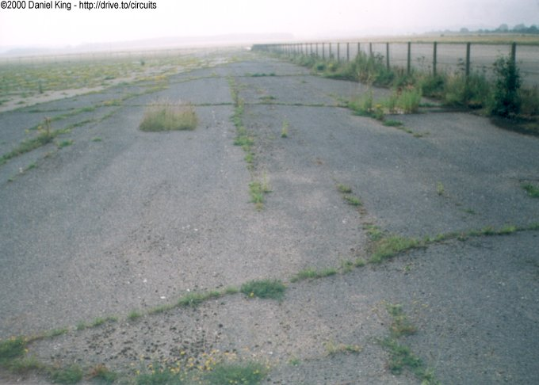
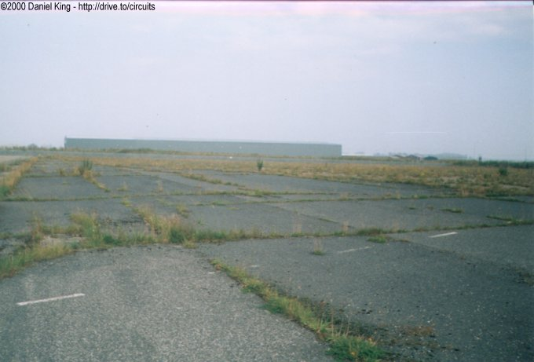

Back Straight
|| Contents | 1 | 2 | 3 | 4 | 5 | 6 | Home ||

Numbers indicate where the pictures were taken. Click links
above.
| The back straight is an asphalted area which runs parallel to the runway behind the paddock. At the end of this section, the course moved through a left-right filck onto the actual runway itself. |




